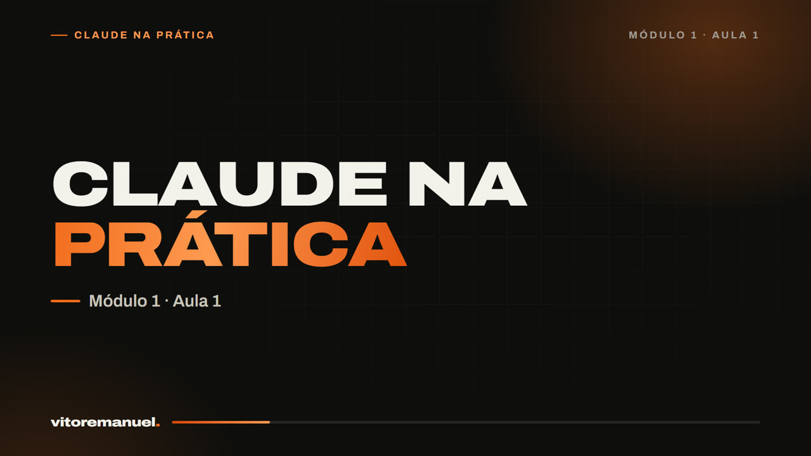

Curso Claude na Prática
Claude na Prática
Leia com o Claude aberto do lado. Cada aula tem um prompt pronto para copiar, uma tarefa de 15 minutos e um checklist.
10módulos
10videoaulas
17prompts prontos
12PDFs

- 1Assista à videoaula do módulo
- 2Leia a aula nesta apostila
- 3Copie o prompt-modelo
- 4Faça a tarefa de 15 minutos
Módulos
Mapa do curso.
Siga na ordem: cada módulo prepara o próximo. Abra um módulo para ver as aulas, a apostila em PDF e marcar o que você já fez.
Cada aula traz
Do vídeo à prática.
Por que isso importa
Como fazer
Exemplo prático
Prompt-modelo · copie e adapte
Erros comuns e como evitar
Tarefa · 15 min e checklist da aula